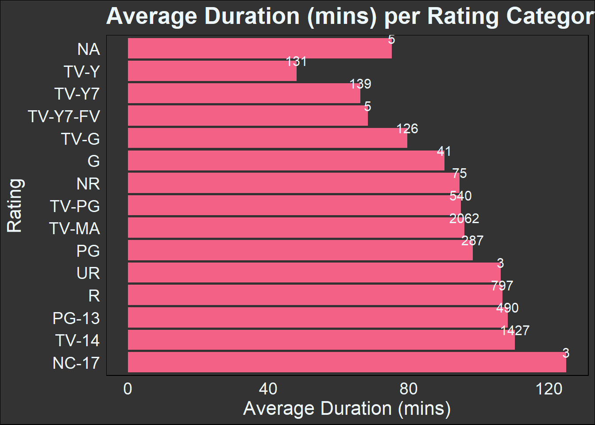
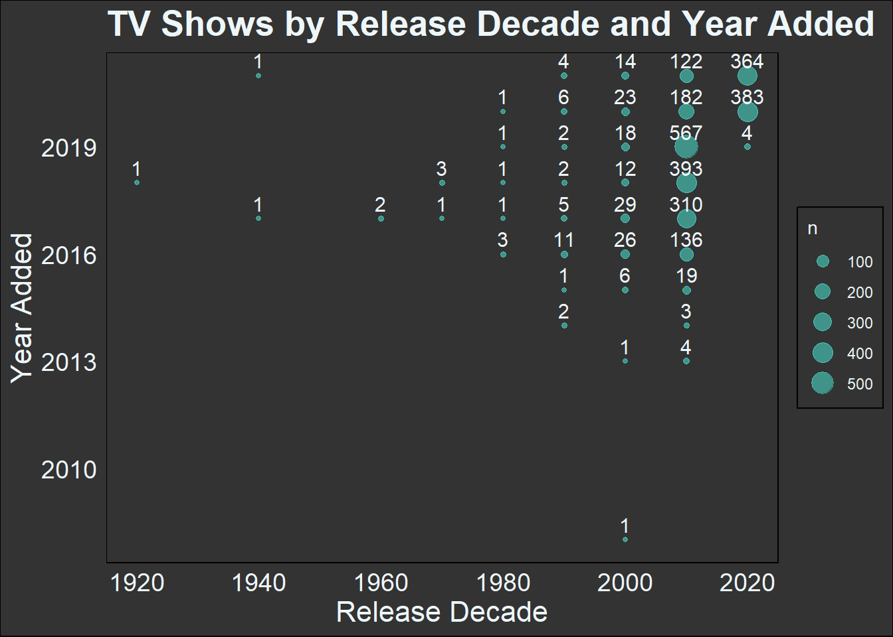

# import libraries
library(tidyverse)Netflix Content Analyis
1 Environment
1.1 Tools
The following open-source tools were used to create this report.
| tool | about | |
|---|---|---|
| VS Code | text & code editor | |
| Quarto | technical publishing system | |
| R | programming language for statistical computing |
VS Code was used to create a .qmd Quarto document, which employs markdown and code blocks similar to a Jupyter notebook. Quarto uses pandoc to convert the .qmd document into an HTML file, which in turn can be customized visually using CSS and Bootstrap variables.
The end result is a highly adaptable document cabable of displaying complex code and data visualizations.
1.2 Library
For this data preparation and exploration I made use of the tidyverse collection of data science packages within the R coding language.
1.3 Dataset
I used the Netflix Movies and TV Shows dataset, acquired from kaggle on July 2023.
This dataset contains listings of all movies and tv shows available on Netflix.
| column name | about | |
|---|---|---|
show_id |
unique ID for every movie/tv show | |
type |
identifier as a movie or tv show | |
title |
title of the movie/tv show | |
director |
director of the movie | |
cast |
actors involved in the movie/tv show | |
country |
country where the movie/tv show was produced | |
date_added |
date when the movie/tv show was added on Netflix | |
release_year |
actual release year of the movie/tv show | |
rating |
MPAA rating of the movie/tv show | |
duration |
total duration - in minutes or number of seasons | |
listed_in |
genre of the movie/tv show | |
description |
summary of the movie/tv show |
I imported the csv into a tibble (i.e., dataframe) named df.
# import csv as dataframe
df <- read_csv("data\\netflix_titles.csv")2 Prepare
The head() preview allows us to view the first few rows of data while the glimpse() function identifies column names, column data types, and sample values for each column.
# preview dataframe
df %>%
head()# review column data types and sample values
df %>%
glimpse()Rows: 8,807
Columns: 12
$ show_id <chr> "s1", "s2", "s3", "s4", "s5", "s6", "s7", "s8", "s9", "s1…
$ type <chr> "Movie", "TV Show", "TV Show", "TV Show", "TV Show", "TV …
$ title <chr> "Dick Johnson Is Dead", "Blood & Water", "Ganglands", "Ja…
$ director <chr> "Kirsten Johnson", NA, "Julien Leclercq", NA, NA, "Mike F…
$ cast <chr> NA, "Ama Qamata, Khosi Ngema, Gail Mabalane, Thabang Mola…
$ country <chr> "United States", "South Africa", NA, NA, "India", NA, NA,…
$ date_added <chr> "September 25, 2021", "September 24, 2021", "September 24…
$ release_year <dbl> 2020, 2021, 2021, 2021, 2021, 2021, 2021, 1993, 2021, 202…
$ rating <chr> "PG-13", "TV-MA", "TV-MA", "TV-MA", "TV-MA", "TV-MA", "PG…
$ duration <chr> "90 min", "2 Seasons", "1 Season", "1 Season", "2 Seasons…
$ listed_in <chr> "Documentaries", "International TV Shows, TV Dramas, TV M…
$ description <chr> "As her father nears the end of his life, filmmaker Kirst…2.1 Data Issues
The following issues are to be explored further and addressed if able.
- The
castcolumn contains multiple cast members as a single value- convert column values to a list of values
- The
date_addedcolumn is a string in the form “Month Day, Year”- convert to YYYY-MM-DD datetime
- The
ratingscolumn contains several misplaceddurationvalues- copy misplaced values to
durationand replace existingratingsvalues with NA
- copy misplaced values to
- The
durationcolumn uses different units based on the type (e.g., shows = seasons, movies = minutes)- segment df by type, remove units from values
- The are
NAvalues throughout many columns
2.1.1 Column: cast
I addressed the multiple cast members by splitting the string values in cast using a comma delimiter. This created a list of distinct cast members still contained in the original cast column.
# convert cast column to list
df <- df %>%
mutate(cast = str_split(cast, ", "))# preview dataframe
df %>%
select(title, type, cast) %>%
head()# preview cast list values
df$cast %>%
head()[[1]]
[1] NA
[[2]]
[1] "Ama Qamata" "Khosi Ngema" "Gail Mabalane"
[4] "Thabang Molaba" "Dillon Windvogel" "Natasha Thahane"
[7] "Arno Greeff" "Xolile Tshabalala" "Getmore Sithole"
[10] "Cindy Mahlangu" "Ryle De Morny" "Greteli Fincham"
[13] "Sello Maake Ka-Ncube" "Odwa Gwanya" "Mekaila Mathys"
[16] "Sandi Schultz" "Duane Williams" "Shamilla Miller"
[19] "Patrick Mofokeng"
[[3]]
[1] "Sami Bouajila" "Tracy Gotoas" "Samuel Jouy"
[4] "Nabiha Akkari" "Sofia Lesaffre" "Salim Kechiouche"
[7] "Noureddine Farihi" "Geert Van Rampelberg" "Bakary Diombera"
[[4]]
[1] NA
[[5]]
[1] "Mayur More" "Jitendra Kumar" "Ranjan Raj" "Alam Khan"
[5] "Ahsaas Channa" "Revathi Pillai" "Urvi Singh" "Arun Kumar"
[[6]]
[1] "Kate Siegel" "Zach Gilford" "Hamish Linklater" "Henry Thomas"
[5] "Kristin Lehman" "Samantha Sloyan" "Igby Rigney" "Rahul Kohli"
[9] "Annarah Cymone" "Annabeth Gish" "Alex Essoe" "Rahul Abburi"
[13] "Matt Biedel" "Michael Trucco" "Crystal Balint" "Louis Oliver" We can now confirm that the cast column correctly captures the original information in a list value. Each cast list indicates the number of cast members included and can be expanded when needed.
2.1.2 Column: date_added
I addressed the date format by converting to an appropriate data type for the column date_added. This converts a string-based value of “September 25, 2021” into a date-based value of “2021-09-25” in the ISO 8601 international date standard.
# convert date format and data type
df <- df %>%
mutate(date_added = as.Date(date_added, format = "%B %d, %Y"))# preview date_added values
df %>%
select(title, type, date_added) %>%
head()2.1.3 Column: rating => duration
A value count of the rating column in df reveals three misplaced duration values.
# rating value counts
df %>%
count(rating)# view entries with "min" in rating
df %>%
filter(grepl("min", rating)) %>%
select(title, rating, duration)To correct the issue I copied the misplaced values into duration and updated the values in rating to be NA missing values
# replace "min" values in rating with NA and copy to duration
df <- df %>%
mutate(
duration = ifelse(grepl(" min", rating), rating, duration),
rating = ifelse(grepl(" min", rating), NA, rating)
)# verify changes - rating value counts
df %>%
count(rating)# verify changes - view entries with "min" in rating
df %>%
filter(grepl("min", rating)) %>%
select(title, rating, duration)# verify changes - view entries with "Louis" in title
df %>%
filter(str_starts(title, "Louis")) %>%
select(title, rating, duration)2.1.4 Column: duration
I addressed the mixed units in the duration column by segmenting the dataframe into two new dataframes, one containing tv shows (df_tv) and the other movies (df_movie). In both cases I removed the trailing characters (i.e., units) and converted the values into numeric data types in a new, more descriptive column. The originalduration column was preserved.
# only tv shows
df_tv <- df %>%
filter(type == "TV Show")
# remove units and rename column
df_tv <- df_tv %>%
mutate(n_seasons = as.numeric(str_remove(duration, " .*")))
# preview n_seasons
df_tv %>%
select(title, type, duration, n_seasons)# only movies
df_movie <- df %>%
filter(type == "Movie")
# remove units and rename column
df_movie <- df_movie %>%
mutate(duration_mins = as.numeric(str_remove(duration, " .*")))
df_movie %>%
select(title, type, duration, duration_mins)2.1.5 Dataframe: NA
To conclude my data preparations, I expored the missing values (NA) present in each of the type-based dataframes df_tv and df_movie.
2.1.5.1 TV Shows
# count the number of non-missing values in tv shows
df_tv %>%
summarize_all(list(~ sum(!is.na(.))))# count the number of NA missing values in tv shows
df_tv %>%
summarize_all(list(~ sum(is.na(.))))The columns director, cast, country, date_added, and rating contain missing values.
The director for a TV show is often a collection of directors depending on the episode and therefore not unexpected for missing values. No adjustments were made.
The rating column was missing very few values and was examined in comparison to the remaining flagged columns.
# NA values - rating column
df_tv %>%
filter(is.na(rating)) %>%
select(title, cast, country, date_added, rating)The two entries with missing values for rating are from different countries and years with no other missing values. No adjustments were made.
I next explored the remaining three columns: cast, country, and date_added by counting the missing values in each in comparison to each other. This approach should inform whether a missing value in one column has a relationship to a missing value in another.
# df_tv with missing value flags for cast, country, date_added
df_missing_tv <- df_tv %>%
mutate(
cast_missing = is.na(cast),
country_missing = is.na(country),
date_added_missing = is.na(date_added)
)
df_missing_tv %>%
select(title, cast_missing, country_missing, date_added_missing)# summary counts of missing value pairings
missing_counts_tv <- df_missing_tv %>%
group_by(cast_missing, country_missing, date_added_missing) %>%
summarize(count = n())
missing_counts_tvThe most common occurance was no missing values, followed by missing only the country value or the cast value. Of the 2,676 entries for TV shows in df_tv, only 99 entries (3.7%) are missing values across multiple columns.
None of these findings raised concerns as to the usability of this data and no actions were needed to address the missing values.
2.1.5.2 Movies
# count the number of non-missing values in movies
df_movie %>%
summarize_all(list(~ sum(!is.na(.))))# count the number of NA values in movies
df_movie %>%
summarize_all(list(~ sum(is.na(.))))The columns director, cast, country, and rating contain missing values.
The rating column was missing very few values and was examined in comparison to the other flagged columns.
# NA values - rating column
df_movie %>%
filter(is.na(rating)) %>%
select(title, director, cast, country, rating)The Louis C.K. entries were edited earlier for their misplaced duration values, so these NA values were expected. No adjustments were made.
I next explored the remaining three columns: director, cast, and country by counting the missing values in each in comparison to each other. This approach should inform whether a missing value in one column has a relationship to a missing value in another.
# df_movie with missing value flags for director, cast, country
df_missing_movie <- df_movie %>%
mutate(
director_missing = is.na(director),
cast_missing = is.na(cast),
country_missing = is.na(country)
)
df_missing_movie %>%
select(title, director_missing, cast_missing, country_missing)# summary counts of missing value pairings
missing_counts_movie <- df_missing_movie %>%
group_by(director_missing, cast_missing, country_missing) %>%
summarize(count = n())
missing_counts_movieThe most common occurance was no missing values, followed by missing only the country value or the cast value. This same trend was observed with df_tv. Of the 6,131 entries for movies in df_movie, only 144 entries (2.3%) are missing values across multiple columns.
None of these findings raised concerns as to the usability of this data and no actions were needed to address the missing values.
2.2 Workflow summary
%%{init: {"flowchart": {"htmlLabels": false}} }%%
flowchart TB
import["import data as df"]
identify["identify issues"]
issues["address column issues:
- column: cast
- column: date_added
- column: rating => duration
- column: duration"]
tv["segment tv as df_tv"]
movie["segment movies as df_movie"]
NA["investigate NA values"]
NA2["investigate NA values"]
tv-clean["visualize & export data as df_tv_clean"]
movie-clean["visualize & export data as df_movie_clean"]
import --> identify --> issues --> tv & movie
tv --> NA --> tv-clean
movie --> NA2 --> movie-clean
3 Visualize
3.1 Count by Release Decade


3.2 Count by Release Decade to Year Added


3.3 Avg. Seasons per Rating

3.4 Output
I concluded by exporting df_tv and df_movie for use in Tableau.
# export as csv - tv shows
# write_csv(df_tv, "output/df_tv_clean.csv")
# export as csv - movies
# write_csv(df_movie, "output/df_movie_clean.csv")